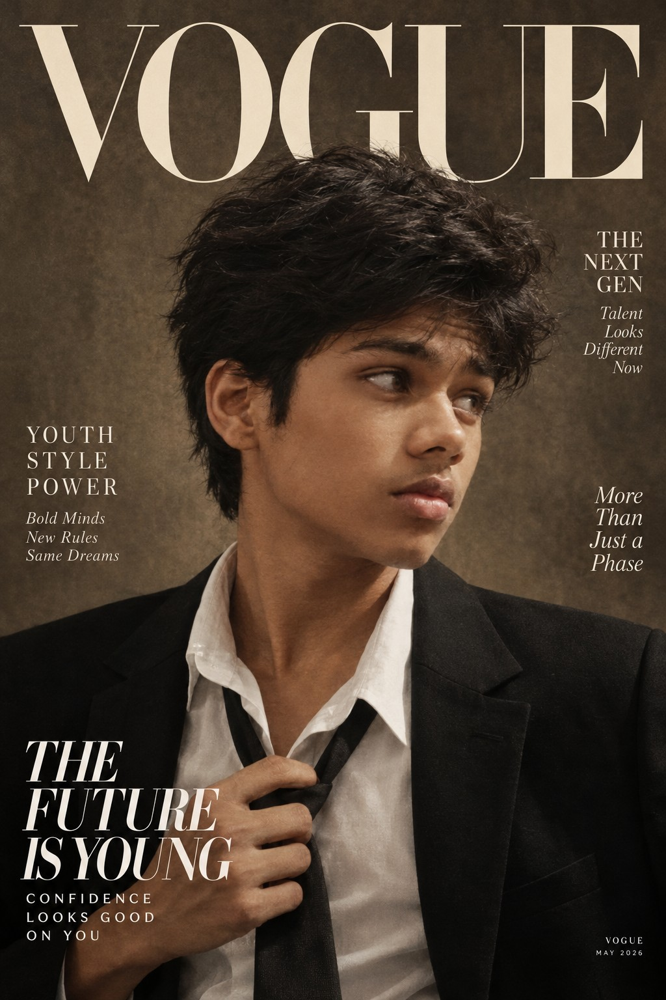

AI Enthusiast
Exploring conversational AI and intelligent systems.
I'm Sourav Narayan, founder of Andronex Studio. I'm a young technology enthusiast exploring artificial intelligence, software development and digital product creation. This is my journey of turning ideas into projects, learning through experimentation and building with the tools available to me.

Sourav is interested in the possibilities of AI, independent software development and interactive digital experiences. From AI assistants to games and websites, each project is an opportunity to experiment, solve problems and keep learning.
Exploring conversational AI and intelligent systems.
Building projects with accessible tools and code.
Exploring interactive experiences and game ideas.
Learning, testing ideas and improving over time.
Every project is part of an ongoing journey of exploration, experimentation and creation.
An interest in technology grew into a desire to build original projects.
The original AI assistant project that started the journey.
A more ambitious AI assistant exploring memory, research and personalisation.
Exploring intelligent software, games and new digital experiences.
The flagship AI assistant project, exploring conversational intelligence, research and personalisation.
Explore Orvyn →The original AI assistant project that laid the foundation for the journey.
Explore SouravAI →An independent horror game project inspired by animatronic survival games.
View Projects →